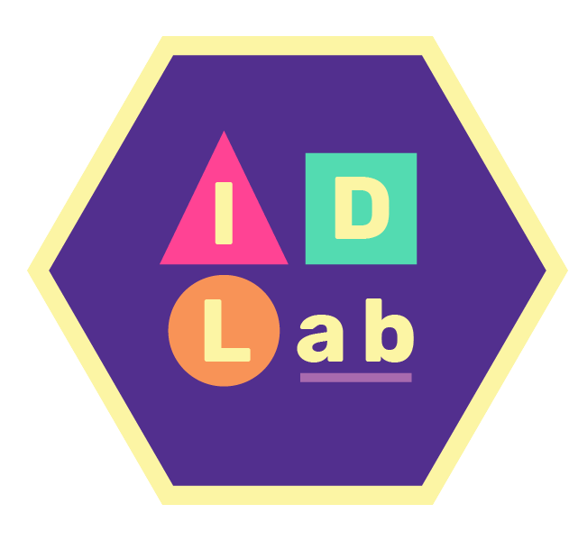

Experiences
Highlighted experiences in social innovation, design, and strategic communications; Complete CV upon request.
Education
Bachelor of Arts | Smith College
Environmental Science and Policy. Focus: Design and Systems Change
Computer Science. Focus: Human-Computer Interaction
September 2020 - May 2024

Professional Experiences
Communications Intern | The White House
The Council on Environmental Quality within the Executive Office of the President coordinates the federal government’s efforts to improve, preserve, and protect America’s public health and environment.
June 2024 - Present
aGILE Design Intern | Oxfam
Supporting strategic communications and systems thinking for aGILE, a social innovation lab for
co-creating solutions for the world’s greatest inequality challenges.
Created: aGILE Website,
annual report, Innovation at Oxfam strategic plan, internal page on Compass, outreach for the Africa Innovation Challenge and Harvard Sixth Community Challenge.
August 2023 - April 2024

Communications and Strategic Management Intern | World Wildlife Fund
Facilitated cross-functional project management and communications for CARE-WWF Alliance, a partnership working at the
intersection of development and conservation.
Created: Redesign of two websites, brand assets, a partnership list and inaugural newsletter for stakeholders,
Alliance global intranet, collateral for conferences, launch of LinkedIn
June 2023 - August 2023

Communications and Development Intern | United Nations Sustainable Development Solutions Network
Supported communications and content management for SDG Academy, the UN SDSN's education flagship program.
Boosted student engagement by fostering partnerships with faculty and universities and strengthened engagement with
alumni.
Created: Publication support for nine stories for the
Learners’ Perspectives blog,
editing and curating video series for
SDG Academy Library, marketing strategy with metric trackings
September 2022 - April 2023

Agnes Shedd Andreae Fellow | National Oceanic & Atmospheric Administration
Worked with NOAA Fisheries Office of Protected Resources to develop and expand communications for the 50th anniversaries of the
Endangered Species Act and the Marine Mammal Protection Act.
Created:
Content for Seal Week, research on advancements in marine technologies and
authored/co-authored public feature stories including
The Prescott Grant Program,
Celebrating 50 Years of Marine Mammals in the Spotlight, and
The Working Group on Marine Mammal UMEs
June 2022 - August 2022

UN SDGs Lead and Web Intern | Conway Center for Innovation and Entrepreneurship
UN SDGs Lead (2023 - 2024)
Proposed and led a team for increasing campus-wide initiatives on the Sustainable Development Goals (SDGs).
Co-created a campus-wide entrepreneurial SDGs challenge “Co-Innovate for Joy.”
Web Intern (2022 - 2023)
Oversaw the Conway Website,
using CMS Drupal. Updated resources, events, and news for the Conway community.
January 2022 - May 2024
Campaign Intern | Alliance for Sustainability
Supported the launch of the S.H.E. Kindness Campaign for sustainable movements and public policies. Co-authored the
Campaign’s 5-Year Vision and Strategy.
Created:
Guide to Action ebook used in conjunction with school sustainability presentations,
UX design mockup for Akepa School Program
June 2021 - July 2022

Research
Human-Computer Interaction Researcher | Inclusive Design Lab
Conducting digital ethnographic analysis research on youth representation and content moderation. Facilitating and open-coding semi-structured qualitative interviews with live streamers on Twitch.
January 2023 - Present
SCRUM and Community Engagement Lead | Precious Plastics
Led a team of six on creatively repurposing plastic waste in the Connecticut River Valley through education, partnerships, and the
building of open-sourced upcycling machines.
Created:
Extruder and shredder machines, project management system for increased team efficiency, open-source user manual on plastic research and safety requirement
February 2022 - May 2024
Leadership
Advisory Board Member | Alliance for Sustainability
Supported the success of the Alliance through strategic planning, financial review, and development of organizational policies.
September 2022 - Present
Global Delegate | Unite 2030
Selected as a global young delegate leading initiatives and public awareness for the UN Sustainable
Development Goals.
August 2023 - Present
Team Lead | AEMES STEM Peer Mentorship Program
Managed the AEMES Mentorship program promoting the success of students from social groups historically underrepresented in STEM through academic and career advice.
September 2022 - May 2024
Co-Chair | Science Center, Committee on Diversity
Initiated and supported programming for diversity in STEM through policy recommendations, guest speakers, and listening sessions.
September 2022 - May 2024
Liaison | Department of Environmental Sciences
Collaborated with the Environmental Science Department by promoting interdisciplinary opportunities with the environmental community.
September 2022 - May 2024